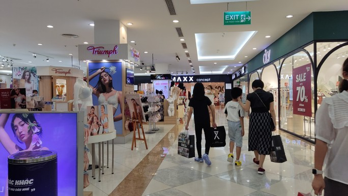

Trang chủ
Làm đẹp
Tin tưc
ĂN UỐNG

Khu vui
chơi ăn uống chở TP HCM nghẹt khách ngày lể
Người
dân đổ xô đi chơi, bay trực thăng TP HCM hút khách lễ 30-4
TP HCM: Quận 7 yêu cầu đơn vị kinh doanh ăn uống treo biển "Doanh nghiệp xanh", "Hộ kinh doanh xanh"
Công ty cổ phần Học và Tự lâp trình Ninh Thuận
31/14 Hải Thượng Lan Ông,Khu phố 3,Phường Đông Hải,Tp Phan Rang-Tháp Chàm
Điện thoại:0798821404 Email:nguyentienchinh21@gmail.com